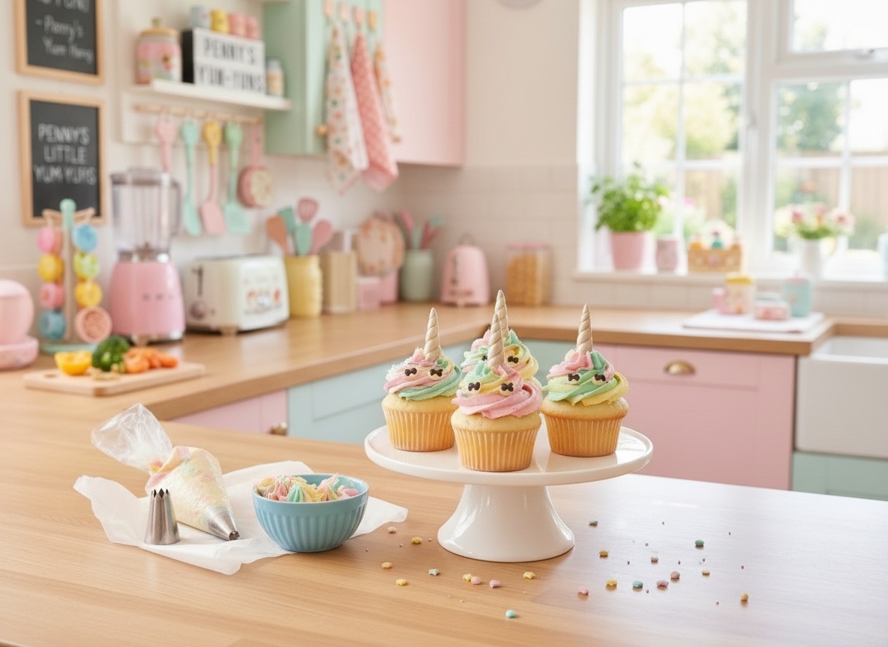

Unicorn Cupcake Party Tower
A showstopper birthday tower that's secretly beginner-friendly

Ingredients
- 12 baked vanilla cupcakes, cooled
- 2 cups white buttercream frosting
- pastel gel food coloring (pink, mint, yellow, lavender)
- edible glitter or sanding sugar
- 12 white chocolate "horns" (melted chocolate piped into cone molds and chilled)
- candy eyes
Steps
- Split the buttercream into 4 bowls and tint each a pastel shade.
- Spoon each color into one piping bag fitted with a large star tip, side by side, so the swirl comes out multicolored.
- Pipe a tall swirl on each cupcake.
- Arrange the frosted cupcakes on a tiered stand to build the "tower".
The 3-Step Cuteness Rule
- Press a white chocolate horn into the top of each swirl.
- Add two candy eyes just below the horn for the unicorn face.
- Finish with a light dusting of edible glitter for the 'magic'.
Penny's Notes
Every mom in the group chat will ask if you hired a bakery. You didn't — you just used one piping bag and a food coloring set. This is the recipe that made "Sellable Food" click for me: it's not a harder cupcake, it's just a cupcake with a name and a face.
“If it's cute, they'll eat it. Promise!”